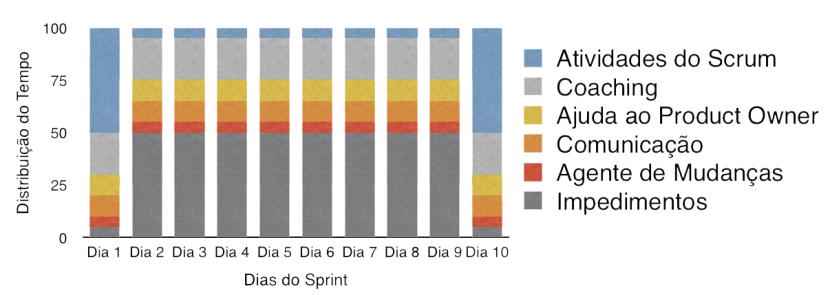
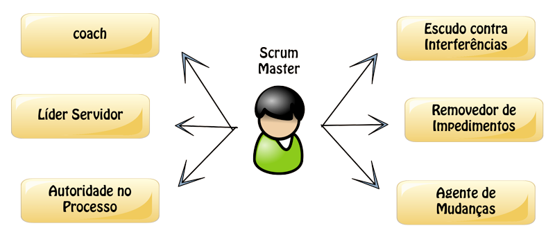
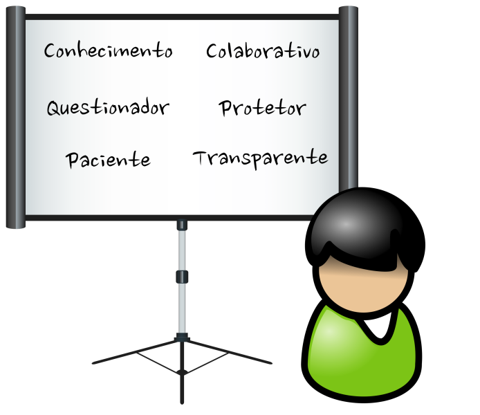

Ele é um facilitador e líder da equipe, ajudando assim a seguir o método, Eles removem obstáculos, garantem que a equipe siga as regras do Scrum e promovem uma melhoria contínua.
“Enquanto o Product Owner está focado em construir o produto correto e a equipe de desenvolvimento está focada em produzir corretamente o produto, e o Scrum Master é o cara que ajuda todos a compreender os valores, princípios e práticas do Scrum. “
Dia a Dia de um Scrum Master
  